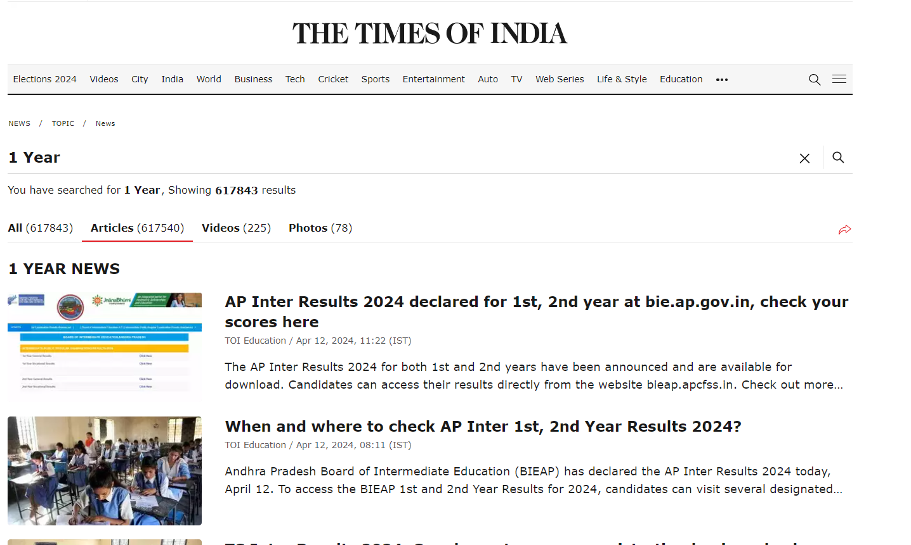
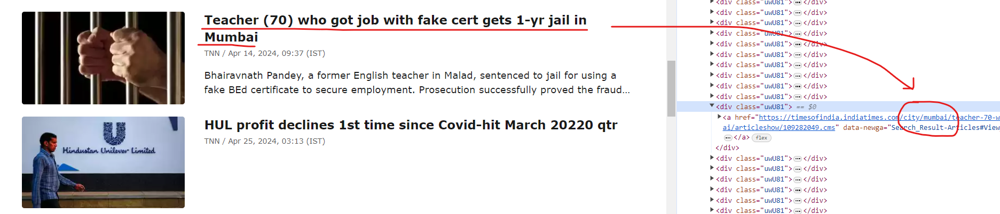

Introduction
We'll start by visiting the Times of India website to identify what information we can extract and how it could be beneficial for our analysis.
In this page, we observe nearly 600,000 articles. Our plan is to extract all of these articles, alongside the crucial date and time information. This metric holds significance as we delve into analyzing the crime rates of cities over the past years. Through our preliminary investigation, we've discovered a pattern: articles related to city news consistently feature the city name preceding the date field.
Additionally, we'll extract the content of the news articles to gain a comprehensive understanding of the news topics and events they cover.
Insights
- In the webpage's inspect mode, it's evident that the link includes the city name appended after a certain pattern. Our next step involves extracting this city name from the link. Additionally, we proceed by determining the type of crime committed by analyzing the paragraph.